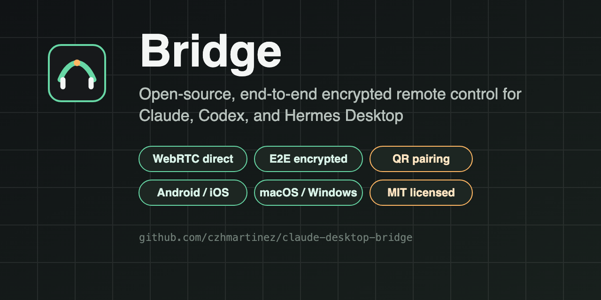

One session surface
Send, stream, approve, ask, steer, and stop Claude, Codex, and Hermes sessions from desktop or mobile.
Open source · MIT · End-to-end encrypted
One encrypted remote for Claude, Codex, and Hermes Desktop.
Control desktop AI agents from your phone, keep every native session, account, model, and permission separate, and hand work between desktops only when you explicitly approve it.

What it does
Bridge is not a remote desktop and not an input automator. It is a protocol and host layer that gives one consistent interface to three desktop runtimes.
Send, stream, approve, ask, steer, and stop Claude, Codex, and Hermes sessions from desktop or mobile.
Per-device AES-256-GCM keys, WebRTC direct connections, and an encrypted WSS relay that never sees message content.
Hand a bounded, redacted, encrypted task context to another runtime after two human confirmations and a read-only plan.
Claude Agent SDK, official Codex app-server over stdio, and a loopback-only Hermes Gateway with process-scoped tokens.
Image attachments, file-change summaries, artifact previews, and host-side file opening render as actual content, not paths.
Offline queues, event replay, push wake, fast reconnect, session archive, delete, and crash-safe relay recovery.
Architecture
Devices prefer a direct WebRTC data channel. When they cannot connect directly, traffic falls back to a self-hostable relay that stores only ciphertext and routing metadata.
Read the full architecture document for adapter contracts, ownership states, and the relay state machine.
Security
Bridge deliberately refuses the shortcuts that make agent remotes risky.
Full details in the security model.
Download
Prebuilt desktop installers and Android APKs are published for every release. The repository is MIT licensed and ready to build yourself.
Quick start: npm ci then npm run dev:desktop.
Requires Node.js 22.13 or newer.